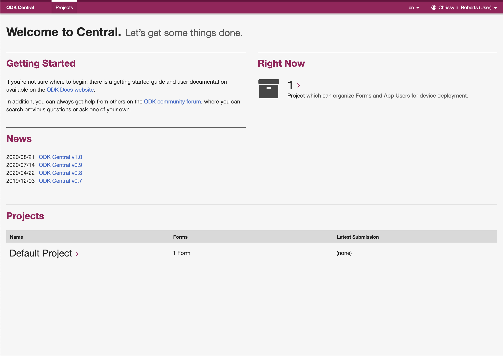
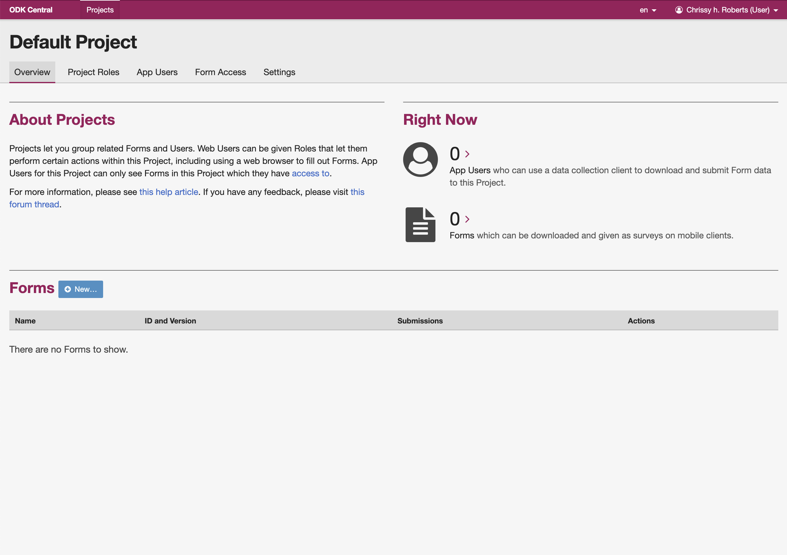
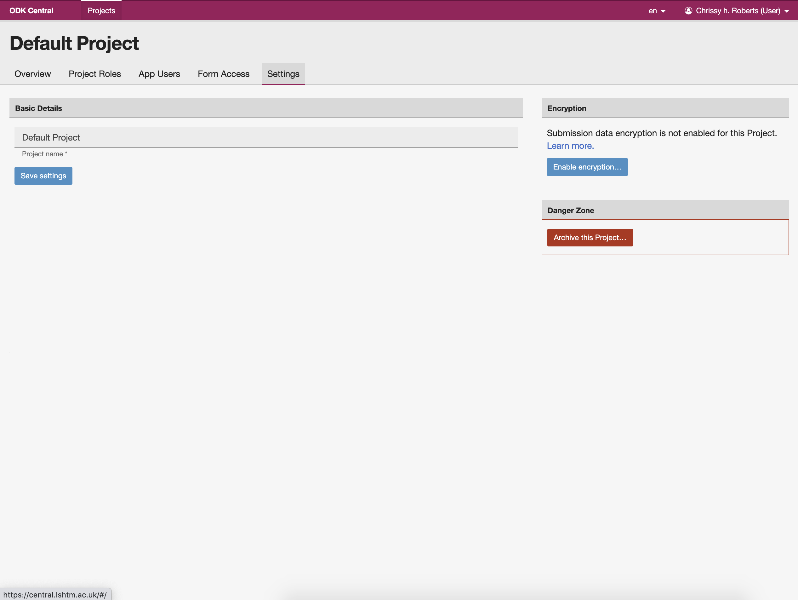

2 LSHTM ODK Server Setup Guide
version 3.0.1 – 2023-04-21
2.1 Introduction
This document provides an overview of the specific requirements for setting up and configuring an ODK Server through LSHTM’s system, run by the LSHTM Global Health Analytics group in collaboration with LSHTM ITS.
The majority of the support you will need to use ODK can be found in the official ODK documentation at https://docs.getodk.org/. There you will find instructions that are both comprehensive and very well maintained by the ODK Community https://forum.getodk.org/.
Email queries to odk@lshtm.ac.uk
We are on Twitter @LSHTM_GHA
2.2 Before starting data collection
The research process can be non-linear and we respect the fact that you may need to set up and develop your data collection system ahead of other important landmark steps such as obtaining ethical permission for your study.
We would like to take this opportunity to emphasise that before starting any data collection that involves study participants, you should have all of the following in place.
Ethical permissions required by LSHTM for the study
A data management plan
A data protection impact assessment
General Information on data protection at LSHTM can be found here
If you need support for data protection issues, please contact the LSHTM Data Protection Officer at DPO@lshtm.ac.uk
2.3 Data Security
ODK Central data are encrypted at rest. This means that when you are not logged in, your data are safe and securely encrypted.
You should always log out of the Central server at the end of each session and should not save your password in your browser's 'remember password' options
Using devices that are not protected by pin codes, encryption and physical protections may lead to compromise of your data.
2.4 Who will be able to see your data?
In this respect ODK provides options for standard, enhanced and ‘zero-trust’ contexts, but the choices you make about how you limit access to data will determine which of the various features you will be able to access on the system. Until the end of 2022, we required all users to default to a zero-trust model, but since 2023 we have allowed users to make an informed decision about how they wish to control access to their data. Whether you choose to use the standard or zero-trust models is up to you and this is controlled by how you choose to implement an additional layer of encryption on your forms and data.
2.4.1 Standard
This is the default for a new project in ODK Central.
Any user who has a role that allows data viewing can see your data - see here
The LSHTM ODK Central system administrators are included in this group
LSHTM's system admins (n = 3) require reasonable access to projects for service provision and support, but will never access your data sets for reasons other than service provision or to respond to requests for project support
All ODK functions are available to projects using this level of security
This is the best option for work that involves management of large numbers of forms, management of many forms across time and for entity-based research
Allows data to be fully recovered from backups by LSHTM ITS partners, even when passwords are lost
2.4.2 Zero Trust
This is the best option for high security and zero-trust contexts, and for simpler data collection approaches that involve just one or two forms, with no need for long term data/form management.
Implemented via “project level encryption”
Only you and those who know the decryption password can view your data
You can only view, edit and manage data after downloading it
Some features of ODK are disabled,
- including on-server editing through Enketo webforms, OData links etc, approvals etc
If you lose the decryption password, your data will be lost
2.5 Server Locations
All data are collected through LSHTM’s ODK servers are stored on institutional servers in LSHTM's data centres at Keppel St. and Tavistock Place. All data are backed up according to LSHTM's institutional policy. If your project requires that data are stored on servers based in other countries, then you should contact us odk@lshtm.ac.uk to discuss your options
Central has options for enhanced data protection through project level encryption. Please read about these options here and think about whether using project level encryption is appropriate for your work; noting that some features of ODK, such as editing submitted data are disabled by project level encryption.
In many cases we recommend turning this feature on unless you need to edit data longitudinally via Central's Enketo Webforms.
2.6 Pay What You Can
Everyone can use the system for £0 if they need to or want to.
If you would like to support our activities with a pay what you can (PWYC) payment, this can be actioned via an inter account journal transfer (IAJT) to our project code ITCR052210 using account code 1300. Please note that some funders (EC, UKRI, WT and US Fed) may have different rules about this type of payment, so you should check with your administrators before making any PWYC payments.
PWYC payments are used to support our service, to purchase devices and to support research and the publication of research papers emerging from the project.
2.7 Fair Usage
The Central server is a shared resource that is used by hundreds of projects. Whilst the server is able to handle very large projects without other users seeing performance drops, the system can become unstable when there is very high demand for data transfers from the server to client machines. This infrequently occurs, but can do so when users request large amounts of data with high frequency.
Users should not therefore attempt to create real-time high demand data links, or to build real time dashboards that utilise data from the Central server. If you plan to create any kind of dashboard that pulls data directly from the Central server with high demand, then you should first discuss this with our team via odk@lshtm.ac.uk. Dashboards should update at most once a day, preferably between 0000 and 0500 UTC.
Users in violation of this policy may have their accounts suspended without warning.
2.8 System Information / Downtime
Important system updates (for instance if our servers go down unexpectedly) will be announced through our Twitter account@LSHTM_GHA
Any URGENT issues should be emailed to ODK@LSHTM.ac.uk
Any support request should include
The full project name
A detailed description of the problem, including screenshots where relevant
Description of steps you’ve taken to try and resolve the problem
Please consult the FAQ before emailing for support
2.9 Project Names
Our project names include a short identifier and the name of the person responsible
- e.g. COOL_Project__Amanda_Purkins
The project name should not be changed under any circumstances
2.10 Setting up your project
Request a server project LSHTM by completing this form.
Each ODK project server is only for use by your team and for the specific project named in the server request form.
You will receive an email from
no-reply@lshtm.ac.ukwhich will invite you to become aweb useron ODK Central, the software server that runs ODK. The email will contain a link to the ODK Central server system. This link will expire after 24 hours.Click the link and you will be taken to a page where you can set your password.
- A good technique for making passwords is to use four random words, put together in a memorable way
- For instance
grapes$CATCH£brickRED*fudgeis a strong and memorable password. - Do not use simple replacement logic like this
cl3v3r-pa55w0rdas passwords generated this way are easily cracked - Please note that passwords should NOT include the name of your project, nor the year it started (i.e.
covidcomplications2020would be a very bad password)
- For instance
- A good technique for making passwords is to use four random words, put together in a memorable way
Once you have signed in, you should see the welcome page and a list of projects that you have been assigned to as a user or project administrator. Any user can be assigned to multiple projects, but projects can only be created or archived by the system administrators. If you want to set up additional projects, then you should complete a new server request form.

- If you click on the name of the project (here
Default Project) you will be taken to the project page, which is where you will do most of the work. On this page you can add and test data collection forms, create and control access for users for the ODK Android app, or make URLs that will allow data collection via web-forms. The project page looks like this

2.11 User types
ODK Central has two types of users, these being web users and app users.
Web users are people who are authorised to use ODK Central's web interface. There are different roles for web-users, but only system admins can add web-users to your project. To add web users, please contact odk@lshtm.ac.uk, providing the name, institute and role required for each user. For data security purposes you should aim to minimise the number of web-users who have higher levels of access to your data.
App users have primarily data collection roles and can not access the server website. App users may include field enumerators and partners outside LSHTM. Project managers can add as many app users as they like.
Public access links can be created by web users. These links can be used by participants to submit data through a web browser. They are useful for many types of work, including online/postal surveys and things advertised on websites, adverts and posters.
2.12 Initial project settings
Before you can start collecting data, you have to change some settings. From the project page, click the settings tab. Here you have three options.

- Archive this project
- This is used at the end of the study. Archiving is irreversible, so unless you are sure that you are done, don’t press this button.
- Rename
- You will see the option to rename your project but This should not be done under any circumstances. The LSHTM system administrators use the project names to audit the use of our services across the platform and any projects which are renamed by users will be deactivated immediately.
- Encryption
- If you want to turn on project level encryption, this is where you do it. You cannot reverse the process so think carefully about what you need.
2.13 Encryption
The General Data Protection Regulation (GDPR) (EU) 2016/679 came in to force in May 2018 and this law requires that all reasonable steps should be taken to make it reasonably unlikely that personal and sensitive data relating to individuals and their health could be accessed or used by third parties without explicit consent.
PLEASE NOTE
GDPR makes no clear distinction between the use of names and pseudonyms or ID codes. Any data which can be linked to a living individual (by any person) is considered sensitive and ‘relevant’ to the GDPR.
Fully anonymous data sets (for instance where the project leads cannot link the data back to the origin in any way) are exempt from GDPR.
Project Level Encryption provides an extra layer of security by encrypting all data both on-device and on-server. This can be great for the extra security it brings, but it does lock you out of some excellent features of ODK. It is therefore worth taking time to carefully consider whether you need/want project level encryption.
The basic function of project level encryption is that you click a button on the settings page and set a single system wide password that is then used to encrypt and decrypt your data across all forms in your project. When you want to download and decrypt your data, you provide the password and all your data will then be downloaded to your computer as a zip file containing human-readable data.
If you forget or lose this password, there is no way to recover it and you will lose all your data. The password is never stored on the server, but is used as the secret key for decrypting data using cyphers that are stored by the server. Because of this, the system administrators cannot under any circumstance help you to recover the password.
2.14 Detailed instructions
Your project should now be up and running, with either standard, zero trust (
project level)or enhanced (form level encryption)in place.For further instructions on how to use ODK, please refer to the official ODK documentation at https://docs.getodk.org/.
2.15 Frequently Asked Question (FAQ)
I can’t access my project, what should I do?
Often these issues are temporary and relate to a specific user, their location and their internet access point.
Try logging in from another WiFi or mobile internet connection.
Ask another web-user who has access to your project to try to log in using their credentials
Clear the cache on your browser and then try again
Occasionally these issues are due to a system outage. We have automatic systems in place which reboot the system every 24 hours.
- Wait until tomorrow and try again
Do I need to have ethics permission before I set up my project?
No but you do need ethics permission before you start collecting data.
Can I get help with designing forms?
Yes, you can contact us for help, but you should have a go yourself before you do. We are here for the hard parts. There’s great advice here https://docs.getodk.org/form-design-intro/
I don’t know anything about data management. What can I do to learn the basics?
There’s lots of great stuff on the internet and here’s some stuff to get you started
We have a recorded lecture from our MSc programme, where Chrissy Roberts presents a broad and basic introduction to data science for epidemiology.
ODK’s documentation is brilliant and the online community of the ODK Forum is a knowledgable and supportive place to seek help
For general data analysis/management learning we recommend R for Data Science
Dr Michael Marks has produced a guide which follows the examples of LSHTM’s Clinical Epidemiology module, written in R
For more advanced and specifically epidemiological analysis, the Epidemiologist R Handbook is brilliant
I can’t afford to make a Pay What You Can payment, will you let me use the system?
- Yes
I’m based outside LSHTM, can I still use the system?
Yes, if you are collaborating with someone from LSHTM, but it can get complicated, so contact us to discuss this on a case by case basis
- Sometimes a commercial provider is a better option
I’m not doing research, can I use ODK for internal data management/collection/survey work?
Yes, we use ODK internally for lots of things like monitoring student progress, or doing internal surveys, forms and so on. You should always check what needs to go through ethics and what doesn’t. This can be quite complicated.